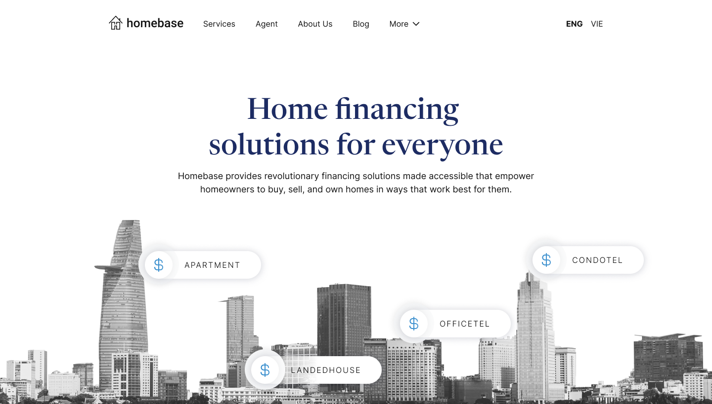
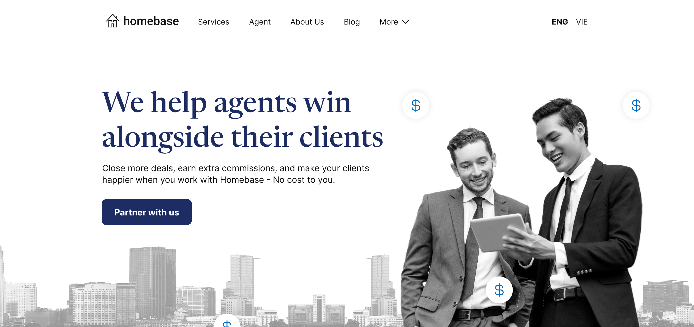
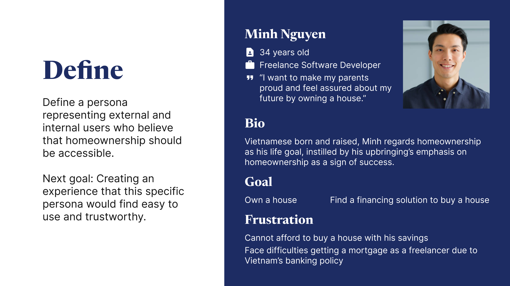
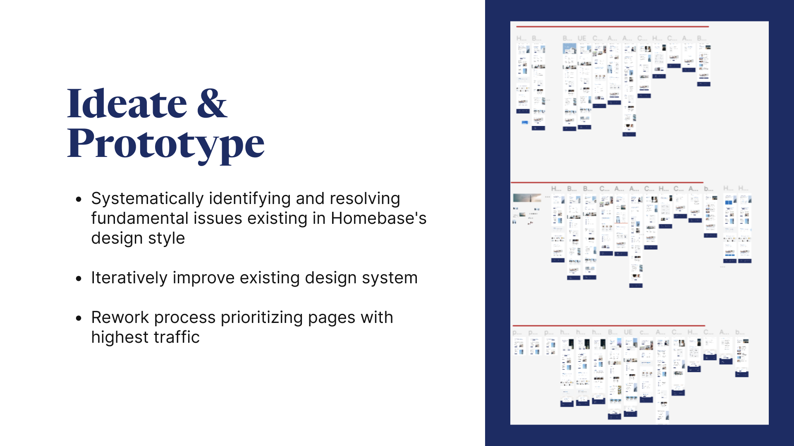
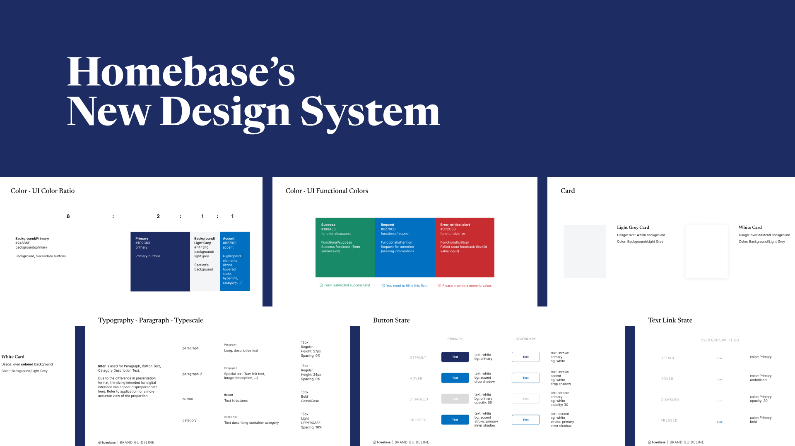
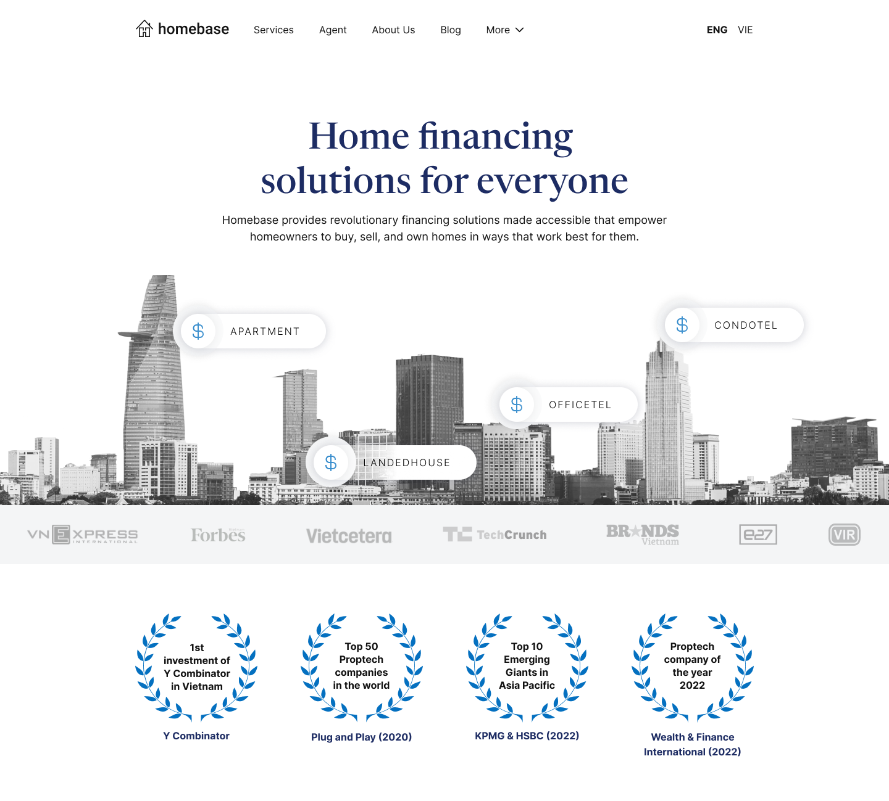
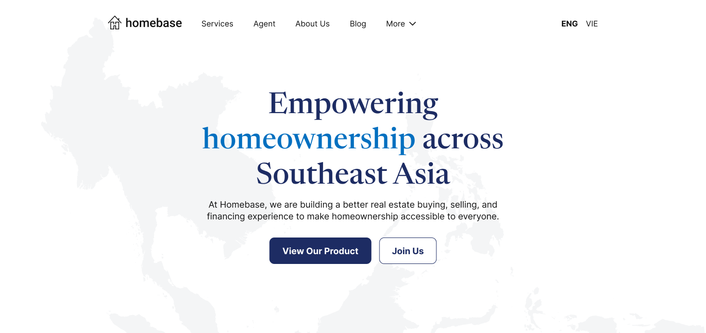
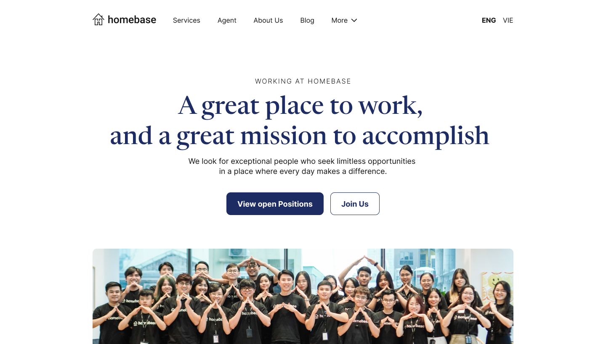

Building Trust in Financial Services through Design
Homebase (YC W21) needed a website that earned trust from real-estate financing customers. I led research and redesign of their website to improve usability and credibility.

Context
In financial services, trust is the product. Homebase's UX research showed that customers and prospects found the existing website hard to navigate and unconvincing, which is a credibility problem that was costing the company.
I collaborated with brand designer on the redesign of their brand and website to improve the usability of the site and revamp its look to evoke trust among its current and prospective customers.
About Homebase
YC W21 fintech startup offering real-estate financing. Helping customers access capital with trust and transparency.


Process
Empathize
To gain an understanding of the problem and the company's users, I first reviewed the user interview scripts and analysis done prior to me joining the company. I then discovered that UX research activities at the time neglected a core user group - the internal users. Besides the external users (customers and prospective customers), internal users such as Marketers, Sales Reps, Product Managers, Founders,… also frequently use the website for live pitch, inquiry response, quote calculation. Oftentimes, external users learn of the website and its functionalities first through internal users' introduction.
I then set out to conduct more interviews with the aforementioned internal users to understand more of their difficulties when using the company's website. Besides qualitative data, I also consulted the website's traffic information, ads metrics and lead data to understand the general patterns of usage: where users come from, what type of devices users use, what users do on the websites, …
How we empathize
Qualitative UX research data
Review existing UX research reports
Quantitative data
Review qualitative data on traffics, user activities, heatmaps
Discovery of additional user profile
Identified a core user group that was neglected in previous research - the internal users
Outcome
Additional interviews
Conducted more interviews with internal users (Marketers, Sales Reps, Product Managers, ...)
Define
The aforementioned effort has lead us to define the company website's user persona: a 30-something who regards homeownership as one's life goal, instilled by their upbringing's emphasis on homeownership as a sign of success. This characterization not only represents the external but also internal users, who worked for Homebase out of the belief that homeownership should be accessible.
Having a persona defined, we have a more concrete goal to work towards: creating an experience that this specific persona would find easy to use and trustworthy.

Ideate and Prototype
I worked closely with engineers, product experts, marketing and management throughout the whole process of redesigning the website. As there are more than 20 pages on the websites that need rework, we started by systematically resolving fundamental issues existing in Homebase's design style that leads to issues raised by users by developing a design guideline to ensure consistent design across the website.
We started by making changes to the existing design guideline, which is quite minimal with about 11 pages, and then expand the guidelines to 30 pages in the following iteration with more detailed guidelines for graphics design and UI/UX.
The redesign of the website started with the team prioritizing pages with highest traffic and iteratively introducing updates to those using the new design guidelines. Using Figma, a new design system is also built alongside the redesign following the new guidelines.
Besides participating in redefining the UI design, I was also responsible for various UX changes, such as a new Mortgage Repayment Calculator and Contact Form. I also redesigned the Information Architecture for the company's Blog and Help Center.


Test and Run
As Homebase's website is a vital touchpoint with steady stream of traffic daily, the team working on this project came to the conclusion that we could not roll iteratively page by page. This is because the inconsistency might worsen untrustworthiness issues among external users. The identification of the internal group came in handy for validation of the prototype because It is much quicker, easier and less risky to bring WIPs to internal users for testing and validation.
Therefore, team decided to make a "minimum viable" version of every page for to speed up the testing to publish time. Once we were able to have all new "minimum viable" version of the whole website tested, the team published them all while a more complicated design is in development.
As it is a small startup with small design and development team, I was also involved in the implementation of design using the no-code platform Webflow.


